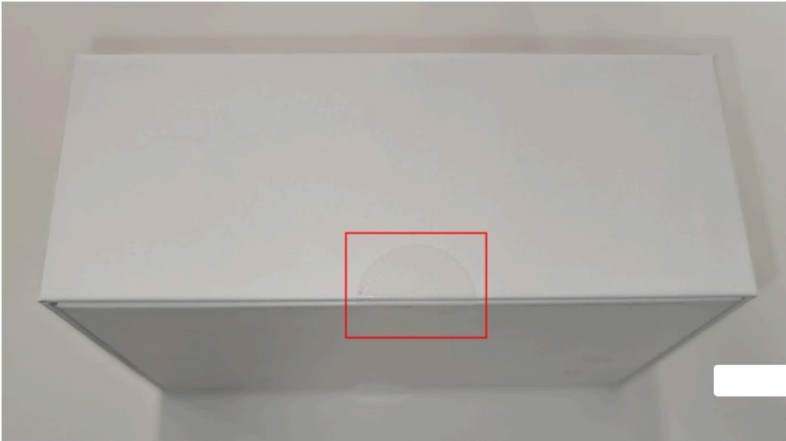
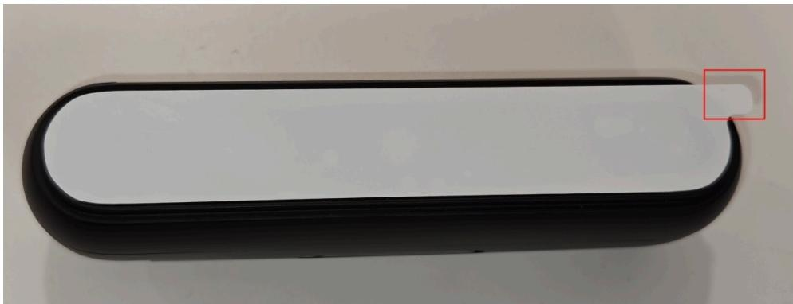
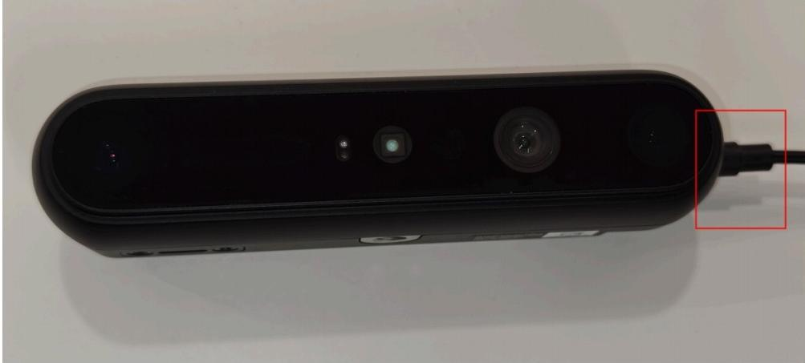
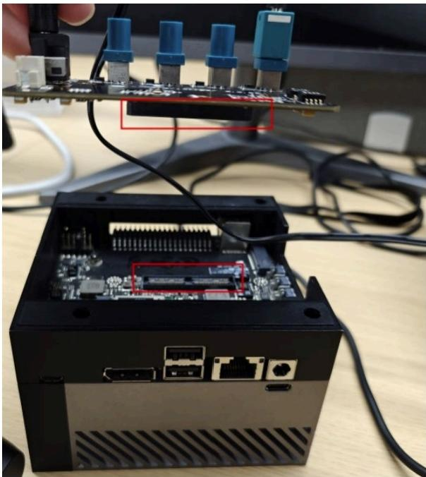
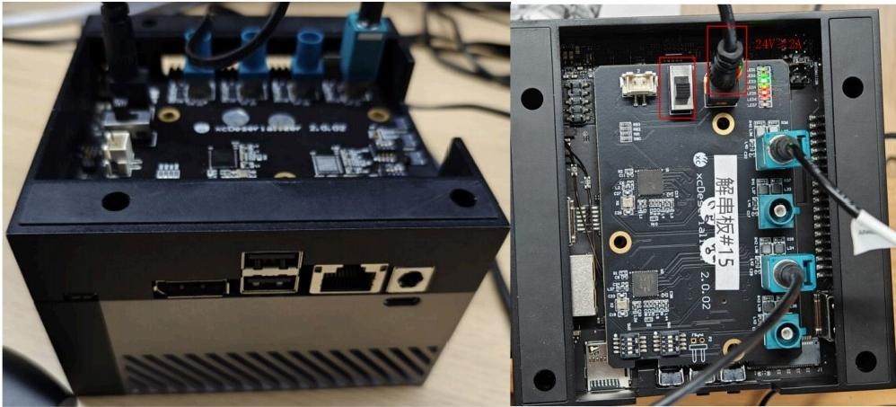

RB 首页 核心技术 产品中心 解决方案 客户案例 新闻中心 关于奥比 投资者关系
首页 > 产 品 中 心 > Orbbec Gemini 330
Gemini 335Lg快速启动指南
1.盒装相机开箱
a) 撕开或剪断盒子两侧的透明胶带；

b) 撕掉相机玻璃盖板上用于保护的白色薄膜；

c) 使用提供的FAKRA-Z 线材连接相机和解串板；

d) 将解串板和英伟达AGX Orin开发者套件装好；
注意：目前仅对Jetpack 6.0版本的AGX Orin进行了适配；

e) 为AGX Orin开发套件和解串板上电；
i. 示例解串板的供电需求为直流24V 2A以上；

2.加载预编译驱动
a) 获取预编译驱动
i. 从奥比Github下载或技术支持人员处获取预编译驱动；
b) 切换到预编译驱动路径
i. 示例命令：终端运行 cd ./驱动所在的路径
c) 授予“copy_to_target.sh”脚本执行权限
i. 示例命令：chmod+x copy_to_target.sh
orbbecaubuntu: ～/Desktop/gnsl workspace/gnsl-drtvers chnod+x Copy to target.sh d) 执行脚本
i. 示例命令：sudo ./copy_to_target.sh
3.开始使用
a) 检查驱动版本
i. 示例命令：cat /sys/module/g2xx/version
#驱动版本号需要与奥比Githu中提供的版本号一致，推荐在下载后进行哈希码校验；
b) 检查视频节点数量
i. 示例命令：Is/sys/video* #1台Gemini 335Lg相机将会有8个视频节点；
orbbec@ubuntu:~/Desktop/gmsL_workspace/gnsL-drtver s ls /dev/video*
/dev/videoe /dev/video11 /dev/video14 /dev/video3 /dev/video6
/dev/v ideo1 /dev/video12 /dev/video15 /dev/video4 /dev/video7
/dev/v ideo10 /dev/video13 /dev/vi deo2 /dev/video5 /dev/video8
示例代码：cd /viewer path &&sudo./Orbbecviewer